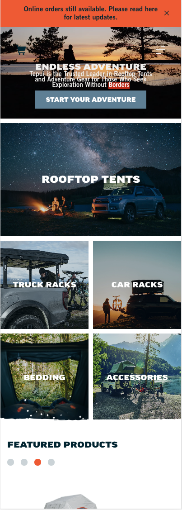

Visual Hierarchy
Tepui
tepui.com
Visual Hierarchy is when something visually is the focal point and other items follow that focal point creating a bigger object which is the Hierarchy on the page.
In this mobile view, we see the main top image is the focal point in the page, and the other images below that are smaller but part of the page, giving the page the Hierarchy principle look.